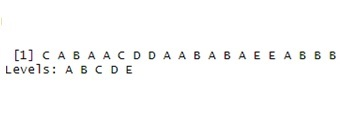

With devices like the Jawbone Up, Nike FuelBand, and Fitbit, it is now possible to collect a large amount of personal activity data relatively inexpensively. These types of devices are part of the so-called automatic movement: a group of enthusiasts who take action on themselves regularly to improve their health, to find patterns in their behavior or because they are fanatics of technology.
One thing that people do on a regular basis is quantify how much of a particular activity they do, but they rarely quantify how well they do it. In this project, accelerometer data is used on the belt, forearm, arm, and dumbbell from 6 participants. Participants were asked to perform barbell lifts correctly and incorrectly in 5 different ways. The data is available on the website: http://web.archive.org/web/20161224072740/http:/groupware.les.inf.puc-rio.br/har.
The goal of this project is to predict how people performed the barbell lift exercise. Different models will be tested in order to make the predictions and the idea is to be able to find the best possible prediction through machine learning techniques. The report will describe how the prediction model was built, how cross-validation was used, and the expected out-of-sample error is estimated. Finally, the prediction model will be used to predict 20 different test cases. The variable that contains the way the exercise was run is called “classe”
Before building the predictive model, it is convenient to briefly review the data frame to have a better understanding of the data:
datos = read.csv("pml-training.csv")
dim(datos)## [1] 19622 160The base contains 19622 observations and 160 variables. It is very important to check if there are observations or variables with missing values:
any(!complete.cases(datos))## [1] TRUEWhen checking for missing values, check how many variables contain values stored in quotes or as missing values:
comillas = datos %>% map_lgl(.f = function(x){any(!is.na(x) & x == "")})
sum(comillas>0)## [1] 33There are 33 variables that contain "" values and must be transformed to NA:
datos[datos == ""] = NAIt should be checked how many variables contain NA values:
ausentes = map_dbl(datos, .f = function(x){sum(is.na(x))})
sum(ausentes>0)## [1] 100100 variables contain missing values. It is convenient to check how many missing values each variable has to determine if those variables are eliminated or if those missing values are imputed:
ausentes = map_dbl(datos, .f = function(x){sum(is.na(x))})
sum(ausentes> 0.8*19622)## [1] 100The 100 variables register more than 80% of missing values, therefore, it is convenient to eliminate these variables and avoid imputation of values:
datos2 = datos[ , !(names(datos) %in% names(ausentes[ausentes > 0.8*19622]))]
datos$classe = as.factor(datos$classe)
datos2$classe = as.factor(datos2$classe)En un ambiente controlado y supervisado por instructores expertos, no debería influir la fecha ni el nombre de la persona al momento de ejecutar el ejercicio de barras, por lo tanto, se exluirán esas variables del modelo:
datos2 = select(datos2, -X, -user_name,-raw_timestamp_part_1, -raw_timestamp_part_2,
-cvtd_timestamp, -new_window)In a controlled environment supervised by expert instructors, the date or name of the person should not influence when executing the barbell exercise, therefore, these variables will be excluded from the model:
prop.table(table(datos$classe))##
## A B C D E
## 0.2843747 0.1935073 0.1743961 0.1638977 0.1838243It is important to know how the variable to be predicted is distributed, because this is a minimum prediction parameter that the model must have. For example, if you predict that the result is always “A”, you will have a hit of approx. of 28%, and this prediction is simply a hit that occurs by chance. The idea is that the model has a higher level of prediction in random situations.
Another analysis that is convenient to carry out is to study the correlation between variables to identify which predictors provide redundant information:
datos3 = select(datos2, -classe)
correlacion = cor(datos3)
correlacionalta = findCorrelation(correlacion, 0.9)
datos3 = datos3[, -correlacionalta]
nombres = names(datos3)
nombres <- c(nombres, "classe")
datos2 <- datos2[ , (names(datos2) %in% nombres)]
ncol(datos2)-1## [1] 46So far the variables are reduced to 46 once a correlation test greater than 0.9 is done
It is convenient to study the importance of the variables and the influence they have on the variable to be predicted. For this purpose it is suitable to use the “Random Forest” strategy:
datos_rf = datos2
datos_rf = map_if(.x = datos_rf, .p = is.character, .f = as.factor) %>% as.data.frame()
modelo_randforest = randomForest(formula = classe ~ . ,
data = na.omit(datos_rf),
mtry = 5,
importance = TRUE,
ntree = 1000)
importancia = as.data.frame(modelo_randforest$importance)
importancia = rownames_to_column(importancia, var = "variable")
p1 = ggplot(data = importancia, aes(y = reorder(variable,-MeanDecreaseAccuracy),
x = MeanDecreaseAccuracy, fill = MeanDecreaseAccuracy)) +
labs(y = "variable", title = "Accuracy") +
geom_col() +
coord_flip() +
theme_bw() +
theme(plot.title = element_text(hjust = 0.5))+
theme(legend.position = "bottom", axis.text.x = element_text(angle = 45, hjust = 1))
p1Exploratory data analysis has made it possible to identify missing values. It was also possible to identify which variables have high correlation. It seems that the 5 variables that most influence the correct way of lifting bars are: “num_window”, “yaw_belt”, “magnet_dumbell_y”, “magnet_dumbell_z” and “roll_forearm”. Finally, it should be mentioned that it was possible to identify a minimum level of prediction that the model must exceed to be considered better than a random prediction.
It is necessary to divide the observations into a set of training and testing. With the first, the model is built and trained, and in the second, the error and the capacity of the model are quantified:
indices = createDataPartition(y = datos$classe, p = 0.75, list = FALSE, times = 1)
train = datos[indices, ]
test = datos[-indices, ]The data preprocessing encompasses those transformations of the data made in order that they can be accepted by the machine learning algorithm or that they improve their results.
A recipe () object is created with the response variable and the predictors. All variables detected with a high number of missing values are excluded from the model. Variables that have high correlation and that may be redundant for the model are also omitted, and variables that seem not to provide useful information are eliminated:
objeto_recipe = recipe(formula = classe ~ num_window + yaw_belt + magnet_dumbbell_y
+ roll_forearm + magnet_dumbbell_z + magnet_dumbbell_x
+ pitch_belt + pitch_forearm + magnet_belt_z
+ roll_dumbbell + magnet_belt_y + accel_dumbbell_y
+ accel_dumbbell_z + accel_forearm_x + roll_arm
+ total_accel_dumbbell + magnet_arm_x + yaw_dumbbell
+ gyros_belt_z + accel_dumbbell_x + magnet_arm_y
+ accel_forearm_z + accel_arm_x + magnet_belt_x
+ total_accel_belt + magnet_forearm_z + pitch_dumbbell
+ magnet_forearm_x + magnet_forearm_y + gyros_dumbbell_y
+ yaw_arm + yaw_forearm + pitch_arm + accel_arm_y
+ magnet_arm_z + gyros_belt_y + accel_forearm_y
+ gyros_belt_x + accel_arm_z + gyros_arm_y
+ total_accel_arm + total_accel_forearm
+ gyros_forearm_y + gyros_forearm_x + gyros_forearm_z
+ gyros_arm_z, data = train)Predictors that contain unique values (zero-variance) should not be included in the model as they do not provide information. It is also not convenient to include predictors that have a variance close to zero, that is, predictors that take only a few values, of which some appear very infrequently. The problem with the latter is that they can become predictors with zero variance when the observations are split by cross-validation or bootstrap:
datos %>% select(num_window, yaw_belt, magnet_dumbbell_y, roll_forearm, magnet_dumbbell_z,
magnet_dumbbell_x, pitch_belt, pitch_forearm, magnet_belt_z, roll_dumbbell,
magnet_belt_y, accel_dumbbell_y, accel_dumbbell_z, accel_forearm_x,
roll_arm, total_accel_dumbbell, magnet_arm_x, yaw_dumbbell, gyros_belt_z,
accel_dumbbell_x, magnet_arm_y, accel_forearm_z, accel_arm_x, magnet_belt_x,
total_accel_belt, magnet_forearm_z, pitch_dumbbell, magnet_forearm_x,
magnet_forearm_y, gyros_dumbbell_y, yaw_arm, yaw_forearm, pitch_arm,
accel_arm_y, magnet_arm_z, gyros_belt_y, accel_forearm_y, gyros_belt_x,
accel_arm_z, gyros_arm_y, total_accel_arm, total_accel_forearm,
gyros_forearm_y, gyros_forearm_x, gyros_forearm_z,
gyros_arm_z) %>% nearZeroVar(saveMetrics = TRUE)## freqRatio percentUnique zeroVar nzv
## num_window 1.000000 4.3726430 FALSE FALSE
## yaw_belt 1.058480 9.9734991 FALSE FALSE
## magnet_dumbbell_y 1.197740 4.3012945 FALSE FALSE
## roll_forearm 11.589286 11.0895933 FALSE FALSE
## magnet_dumbbell_z 1.020833 3.4451126 FALSE FALSE
## magnet_dumbbell_x 1.098266 5.7486495 FALSE FALSE
## pitch_belt 1.036082 9.3772296 FALSE FALSE
## pitch_forearm 65.983051 14.8557741 FALSE FALSE
## magnet_belt_z 1.006369 2.3290184 FALSE FALSE
## roll_dumbbell 1.022388 84.2065029 FALSE FALSE
## magnet_belt_y 1.099688 1.5187035 FALSE FALSE
## accel_dumbbell_y 1.053061 2.3748853 FALSE FALSE
## accel_dumbbell_z 1.133333 2.0894914 FALSE FALSE
## accel_forearm_x 1.126437 4.0464784 FALSE FALSE
## roll_arm 52.338462 13.5256345 FALSE FALSE
## total_accel_dumbbell 1.072634 0.2191418 FALSE FALSE
## magnet_arm_x 1.000000 6.8239731 FALSE FALSE
## yaw_dumbbell 1.132231 83.4828254 FALSE FALSE
## gyros_belt_z 1.066214 0.8612782 FALSE FALSE
## accel_dumbbell_x 1.018018 2.1659362 FALSE FALSE
## magnet_arm_y 1.056818 4.4439914 FALSE FALSE
## accel_forearm_z 1.006250 2.9558659 FALSE FALSE
## accel_arm_x 1.017341 3.9598410 FALSE FALSE
## magnet_belt_x 1.090141 1.6664968 FALSE FALSE
## total_accel_belt 1.063160 0.1477933 FALSE FALSE
## magnet_forearm_z 1.000000 8.5771073 FALSE FALSE
## pitch_dumbbell 2.277372 81.7449801 FALSE FALSE
## magnet_forearm_x 1.012346 7.7667924 FALSE FALSE
## magnet_forearm_y 1.246914 9.5403119 FALSE FALSE
## gyros_dumbbell_y 1.264957 1.4167771 FALSE FALSE
## yaw_arm 33.029126 14.6570176 FALSE FALSE
## yaw_forearm 15.322835 10.1467740 FALSE FALSE
## pitch_arm 87.256410 15.7323412 FALSE FALSE
## accel_arm_y 1.140187 2.7367241 FALSE FALSE
## magnet_arm_z 1.036364 6.4468454 FALSE FALSE
## gyros_belt_y 1.144000 0.3516461 FALSE FALSE
## accel_forearm_y 1.059406 5.1116094 FALSE FALSE
## gyros_belt_x 1.058651 0.7134849 FALSE FALSE
## accel_arm_z 1.128000 4.0362858 FALSE FALSE
## gyros_arm_y 1.454369 1.9162165 FALSE FALSE
## total_accel_arm 1.024526 0.3363572 FALSE FALSE
## total_accel_forearm 1.128928 0.3567424 FALSE FALSE
## gyros_forearm_y 1.036554 3.7763735 FALSE FALSE
## gyros_forearm_x 1.059273 1.5187035 FALSE FALSE
## gyros_forearm_z 1.122917 1.5645704 FALSE FALSE
## gyros_arm_z 1.110687 1.2638875 FALSE FALSEAmong the predictors included in the initial model, none with variance zero or close to zero was detected.
For convenience, it is advisable to standardize all numerical variables and binarize qualitative variables:
objeto_recipe = objeto_recipe %>% step_center(all_numeric())
objeto_recipe = objeto_recipe %>% step_scale(all_numeric())
objeto_recipe = objeto_recipe %>% step_dummy(all_nominal(), -all_outcomes())The recipe object is trained and the transformations are applied to the training and test set:
trained_recipe = prep(objeto_recipe, training = train)
datos_train_prep = bake(trained_recipe, new_data = train)
datos_test_prep = bake(trained_recipe, new_data = test)It is important to select predictors that provide useful information. One objective to be pursued is to use the fewest possible number of variables and at the same time maximize predictive capacity. The 46 variables and the possible combinations that work best will be studied:
cluster = makeCluster(detectCores() - 1)
registerDoParallel(cluster)
subconjuntos = c(3:46)
repeticiones = 30
set.seed(123)
seeds = vector(mode = "list", length = repeticiones + 1)
for (i in 1:repeticiones) {
seeds[[i]] = sample.int(1000, length(subconjuntos))
}
seeds[[repeticiones + 1]] = sample.int(1000, 1)
ctrl_rfe = rfeControl(functions = rfFuncs, method = "boot", number = repeticiones,
returnResamp = "all", allowParallel = TRUE, verbose = FALSE,
seeds = seeds)
set.seed(342)
rf_rfe = rfe(classe ~ ., data = datos_train_prep,
sizes = subconjuntos,
metric = "Accuracy",
rfeControl = ctrl_rfe,
ntree = 500)
rf_rfe
stopCluster(cluster)
registerDoSEQ()
p2 = ggplot(data = rf_rfe$results, aes(x = Variables, y = Accuracy)) +
geom_line() +
scale_x_continuous(breaks = unique(rf_rfe$results$Variables)) +
geom_point() +
geom_errorbar(aes(ymin = Accuracy - AccuracySD, ymax = Accuracy + AccuracySD),
width = 0.2) +
geom_point(data = rf_rfe$results %>% slice(which.max(Accuracy)),
color = "red") +
theme_bw()
p2A model is fitted based on all the predictors that were available after preprocessing:
modelo_svmlineal = train(classe ~ ., method = "svmLinear", data = datos_train_prep)
modelo_svmlineal$finalModelThis model is created from the training data and presents an error of 23.29%. It is particularly interesting to have a more accurate estimate of the error. A linear support vector machine is again fitted, this time with repeated cross validation to estimate the error:
cluster = makeCluster(detectCores() - 1)
registerDoParallel(cluster)
particiones = 10
repeticiones = 5
set.seed(123)
seeds = vector(mode = "list", length = (particiones * repeticiones) + 1)
for (i in 1:(particiones * repeticiones)) {
seeds[[i]] = sample.int(1000, 1)
}
control_train = trainControl(method = "repeatedcv", number = particiones,
repeats = repeticiones,
returnResamp = "all", verboseIter = FALSE,
allowParallel = TRUE)
set.seed(342)
modelo_svmlineal = train(classe ~ ., data = datos_train_prep,
method = "svmLinear",
metric = "Accuracy",
trControl = control_train)
modelo_svmlineal
stopCluster(cluster)
registerDoSEQ()The average accuracy estimated by repeated cross validation is 0.7595. The model correctly predicts how the barlift exercise is performed 75.95% of the time:
p3 = ggplot(data = modelo_svmlineal$resample, aes(x = Accuracy)) +
geom_density(alpha = 0.5, fill = "gray50") +
geom_vline(xintercept = mean(modelo_svmlineal$resample$Accuracy),
linetype = "dashed") +
theme_bw()
p4 = ggplot(data = modelo_svmlineal$resample, aes(x = 1, y = Accuracy)) +
geom_boxplot(outlier.shape = NA, alpha = 0.5, fill = "gray50") +
geom_jitter(width = 0.05) +
labs(x = "") +
theme_bw() +
theme(axis.text.x = element_blank(), axis.ticks.x = element_blank())
final_plot = ggarrange(p3, p4)
final_plot = annotate_figure(final_plot,
top = text_grob("Accuracy obtenido en la validación", size = 15))
final_plotAn svmLinear model is re-fitted with different values of the hyperparameter C and repeated cross-validation is used to identify which of them gives better results:
cluster = makeCluster(detectCores() - 1)
registerDoParallel(cluster)
particiones = 10
repeticiones = 5
hiperparametros = data.frame(C = c(0.001, 0.01, 0.1, 0.5, 1, 10))
set.seed(10)
seeds = vector(mode = "list", length = (particiones * repeticiones) + 1)
for (i in 1:(particiones * repeticiones)) {
seeds[[i]] = sample.int(1000, nrow(hiperparametros))
}
seeds[[(particiones * repeticiones) + 1]] = sample.int(1000, 1)
control_train = trainControl(method = "repeatedcv", number = particiones,
repeats = repeticiones,
returnResamp = "all", verboseIter = FALSE,
allowParallel = TRUE)
set.seed(11)
modelo_svmlineal = train(classe ~ ., data = datos_train_prep,
method = "svmLinear",
tuneGrid = hiperparametros,
metric = "Accuracy",
trControl = control_train)
modelo_svmlineal
stopCluster(cluster)
registerDoSEQ()Of all the values that were adjusted, c = 10 was the one that delivered the highest Accuary with 76.07%:
p5 = ggplot(data = modelo_svmlineal$resample,
aes(x = as.factor(C), y = Accuracy, color = as.factor(C))) +
geom_boxplot(outlier.shape = NA, alpha = 0.5) +
geom_jitter(width = 0.2, alpha = 0.5) +
labs(x = "C") +
theme_bw() + theme(legend.position = "none")
p5Once the model has been fit, a prediction is made with data that the model has not seen. The first prediction is as follows:
predicciones = predict(modelo_svmlineal, newdata = datos_test_prep,
type = "raw")
confusionMatrix(data = predicciones, reference = datos_test_prep$classe)For new cases, the model predicted 76.96% of the observations and yielded an error of 41.42%. Both for the Accuary and the error, in both cases, these reached values very close to those estimated with the training data.
Finally, the predictions for the course questionnaire are presented.
quiz = read.csv("pml-testing.csv")
datos_quiz_prep = bake(trained_recipe, new_data = quiz)
quiz_prediction = predict(modelo_svmlineal, newdata = datos_quiz_prep, type = "raw")
quiz_prediction
Of the 20 questions, the model was able to correctly predict 80% of the questions.